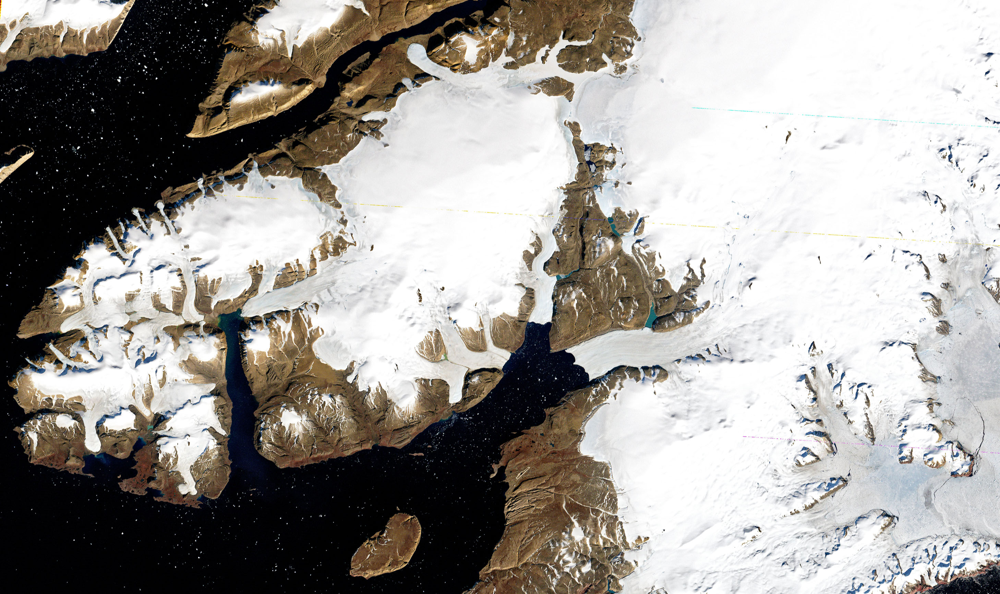
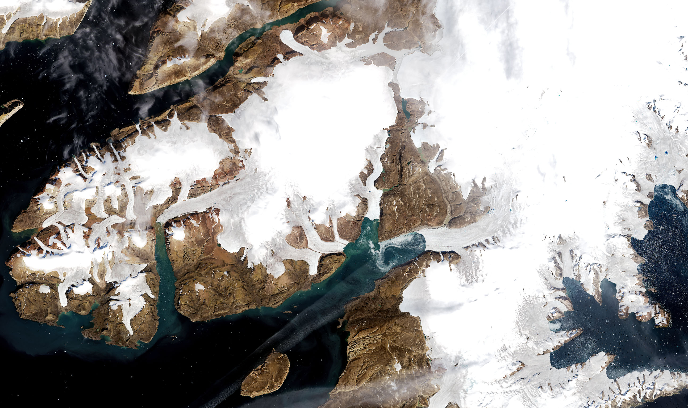
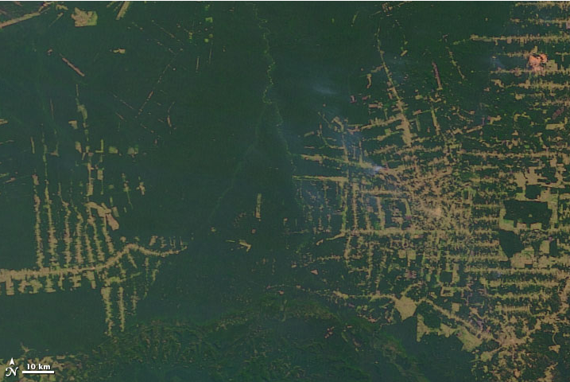
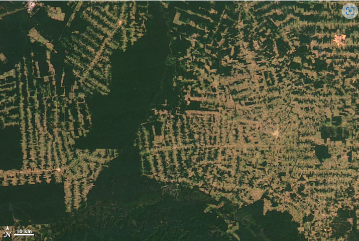

Use the sliders below to compare real satellite imagery over time.


Greenland is losing over 270 billion tons of ice per year due to climate change. NASA satellite images clearly show glacial retreat over the last several decades.


Amazon deforestation rose by 150% in 20 years, releasing vast amounts of carbon into the atmosphere.